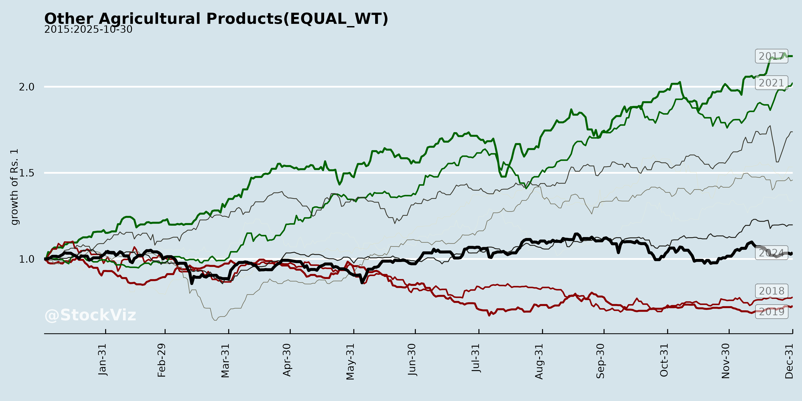
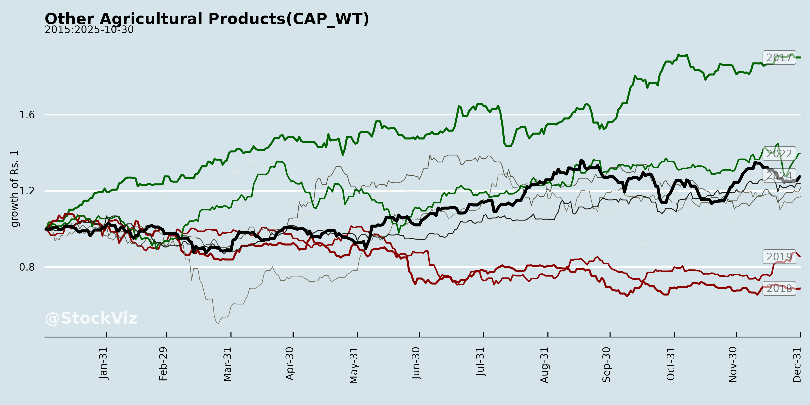
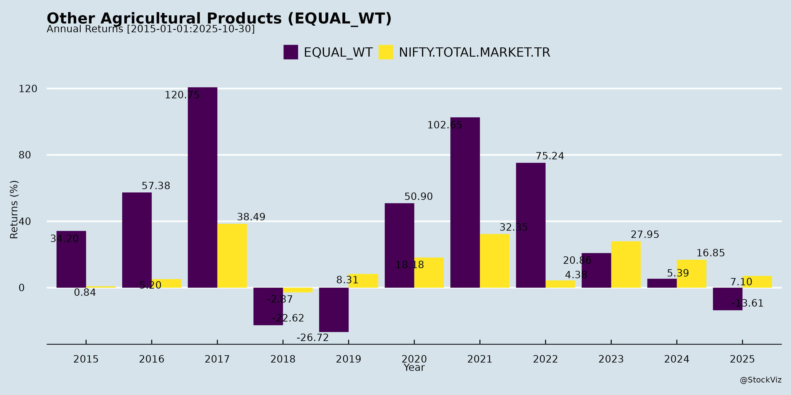
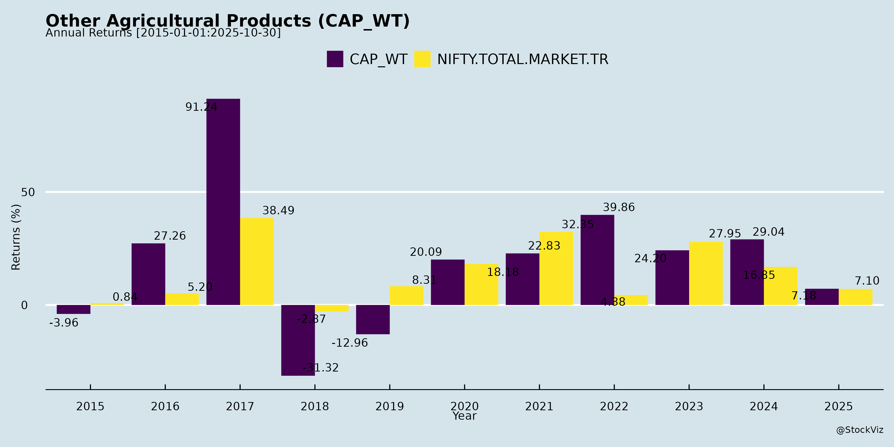
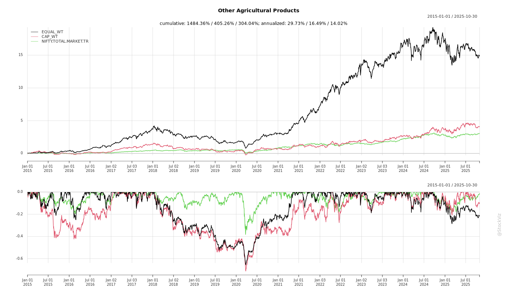
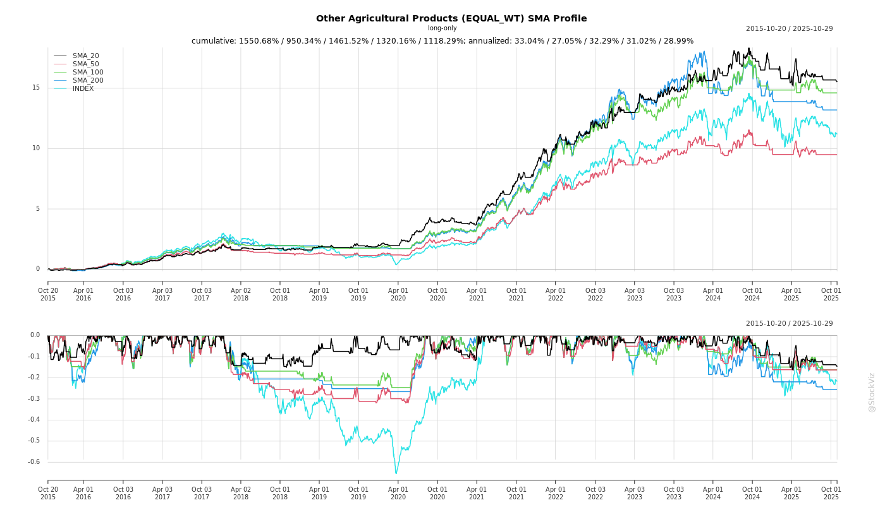
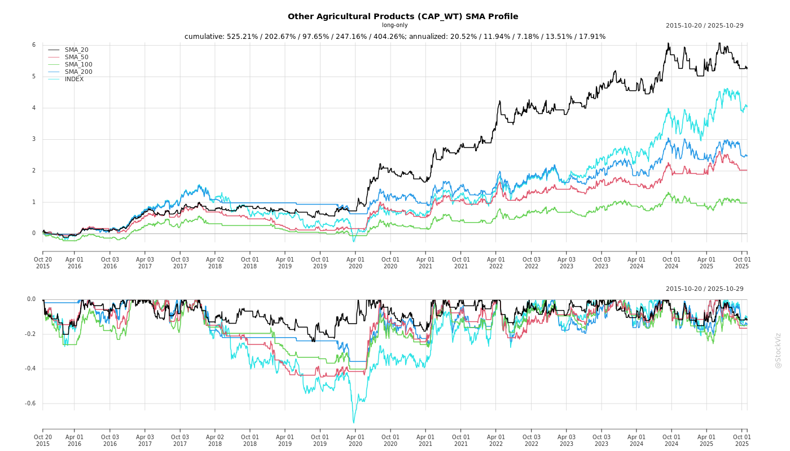
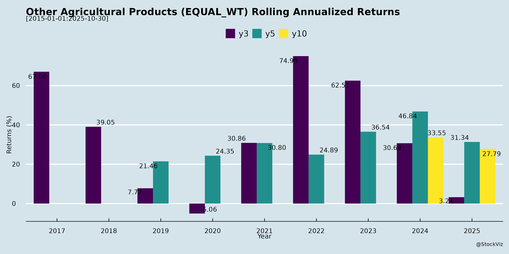
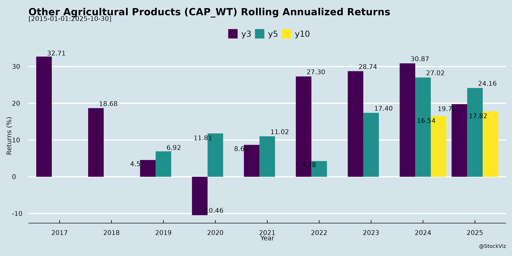

asof: 2025-12-02
The “Other Agricultural Products” sector encompasses processed agri-products like rice (basmati/organic), starch & derivatives (maize-based), seeds (hybrid/non-cotton/paddy), and biofuels (ethanol/CBG/SAF from agri feedstocks). Insights drawn from Q2/H1 FY26 earnings transcripts/announcements of key players (Trualt Bioenergy, Sukhjit Starch, Nath Bio-Genes, Sarveshwar Foods, LT Foods, KRBL, etc.) reveal a resilient sector amid cyclical challenges. FY25/FY26 performance shows revenue moderation (e.g., Trualt -26% YoY H1 revenue to ₹418 Cr; Sukhjit Q2 revenue down QoQ) but improving margins via diversification.
| Metric | FY25 Snapshot | Outlook |
|---|---|---|
| Revenue Growth | 9% (Nath); Stable (Sukhjit) | 15%+ (pan-sector) |
| EBITDA Margin | 14-15% | 15-20% |
| PAT Growth | 13% (Nath) | Double-digit via diversification |
Overall Outlook: Positive with 12-15% CAGR potential through diversification (NCP/biofuels/organics), policy tailwinds, and premiums. Risks mitigated by R&D (4-5% sales spend), strong cash (₹88 Cr), and pan-India presence. Focus on sustainability (CBG/SAF) aligns with global trends.
asof: 2025-12-01
Summary Analysis: Indian Other Agricultural Products Sector (Rice, Seeds, Starch, etc.)
Overview: The sector filings (Q3/Nine Months FY25 ended Dec 2024) reflect resilience amid volatility, with aggregate revenue growth ~15-20% YoY across peers (e.g., LT Foods ~₹1,050 Cr Q3 rev., KRBL ~₹1,681 Cr Q3, Kaveri Seeds ~₹1,740 Cr Q3 consolidated). PAT margins stable at 3-8%, driven by agri exports/domestic demand. Key players: Rice (LT, KRBL, GRM), Seeds (Kaveri, Nath), Starch (Sukhjit, Sanstar).
Tailwinds (Supportive Factors)
Headwinds (Challenges)
Growth Prospects
Key Risks
Overall: Sector buoyant on exports/diversification (Tailwinds > Headwinds), but regulatory overhang caps upside. Growth ~15% FY25 viable if probes resolve; monitor Q4 for inventory normalization. Recommendation: Positive with caution on KRBL/LT legal risks.
asof: 2025-12-02
Summary Analysis: Indian Other Agricultural Products Sector
(Based on recent announcements from key players like LT Foods, KRBL, GRM Overseas, Sarveshwar Foods, Gulshan Polyols, Kaveri Seeds, Gujarat Ambuja Exports, Mangalam Global, Chaman Lal Setia, Indo US Bio-Tech, Sanstar, and Trualt Bioenergy. Sector includes rice processing/export, seeds, edible oils, oleo chemicals, ethanol, and starch derivatives.)
Tailwinds (Positive Factors)
Headwinds (Challenges)
Growth Prospects
Key Risks
Overall Outlook: Positive with Caution. Tailwinds from expansion/govt policy outweigh headwinds; growth prospects strong (10-15% sector CAGR) via exports/R&D. Risks manageable via compliance/governance fixes—watch GRM/KRBL for peer cues. Sector resilient amid India’s agro-export push (~$50 Bn target).
asof: 2025-12-02
Summary Analysis: Indian Other Agricultural Products Sector
(Based on filings from rice processors (LT Foods, KRBL, GRM Overseas, Chaman Lal Setia, Sarveshwar Foods), starch/ethanol/bioenergy players (Trualt Bioenergy, Sukhjit Starch, Sanstar), and seeds (Nath Bio-Genes). Sector includes rice milling/exports, maize starch, ethanol/CBG/SAF, organic/FMCG staples, and hybrid seeds. Focus: FY25/Q2FY26 performance amid maize/rice volatility, policy shifts, and diversification trends.)
Headwinds (Challenges Constraining Near-Term Performance)
Tailwinds (Positive Structural/Supportive Factors)
Growth Prospects (High-Potential Opportunities)
Key Risks (Potential Downside Factors)
Overall Outlook: Sector resilient amid diversification (organic/FMCG/seeds/CBG >40% growth pockets). Tailwinds from maize softening/export policies outweigh headwinds; 10-15% CAGR feasible with premiums/hybrids. Risks policy-tied; monitor ethanol/CBG execution. Strong balance sheets (low debt, cash surpluses) support growth.
Copyright © 2023 SAS Data Analytics Pvt. Ltd. All rights reserved.